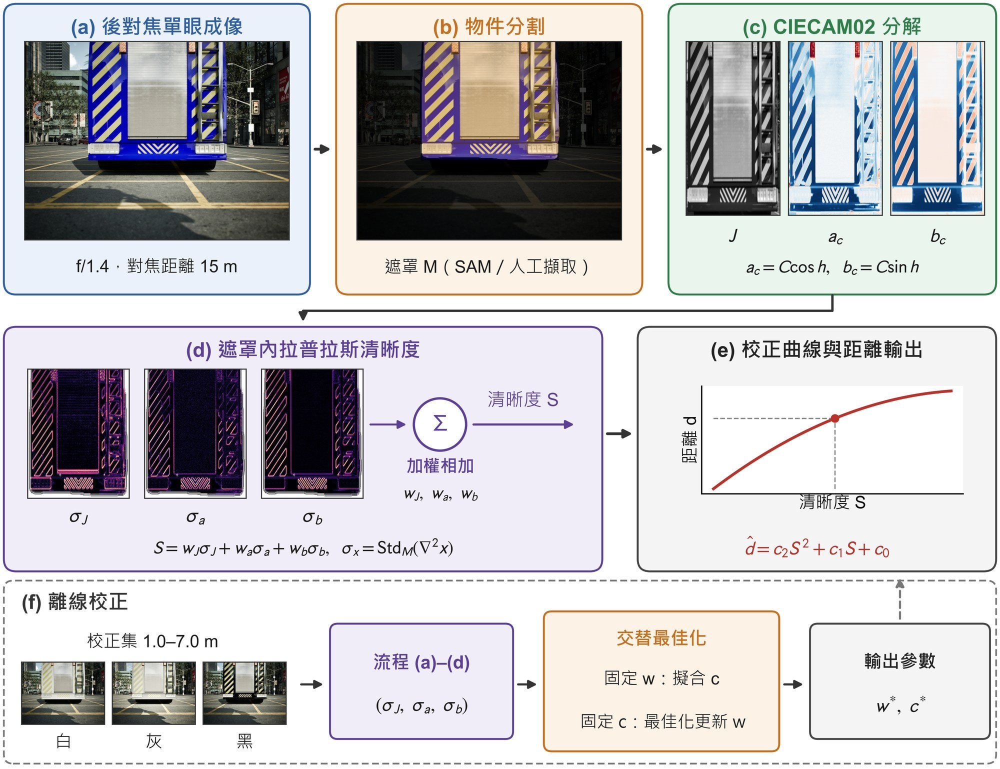

傳統失焦測距的問題
複雜背景與物體邊界容易混入模糊度計算；轉為灰階後，亮度相近但顏色不同的邊緣也可能被削弱。
2026 產學創新實作競賽 · D86
MONOCULAR DEPTH FROM DEFOCUS
單張影像估測車距。結合色彩感知與物理光學，在 480 張 CARLA 影像達到 0.337 m RMSE。
1 國立臺灣大學2 Rochester Institute of Technology3 國立彰化師範大學
Teaser · CARLA 12 個離散距離影像，依 6.7 → 1.2 m 排序
INTERACTIVE DEMO
選擇車色與距離，查看車輛框、遮罩與估測結果。
既有 CARLA 樣本 · 手繪遮罩 · 預先量測結果
MOTIVATION & CONTRIBUTIONS
電動車、自駕輔助與數位孿生，都需要可靠的距離資訊。相較於光達硬體與雙鏡頭配置，單眼相機具備低成本、體積小與密集影像資訊的優勢；關鍵是如何從一張影像，取得具有物理依據的公制距離。
複雜背景與物體邊界容易混入模糊度計算；轉為灰階後，亮度相近但顏色不同的邊緣也可能被削弱。
Depth Pro、UniDepth V2 能由單張影像預測深度，但預訓練模型在新場景的公制尺度仍需檢驗，也難直接確認推論是否依據失焦資訊。
以 CIECAM02 明度 J 與色彩通道 a꜀、b꜀ 保留感知邊緣資訊。加權拉普拉斯響應取代單純灰階清晰度，降低不同物體色彩造成的估測偏差。
交替最佳化色彩通道權重與距離映射曲線，以少量已知距離的校正影像，將感知清晰度轉換為公制距離。
將對焦平面設於測距區間之後，使散焦量隨距離單調變化；結合目標物分割，在車輛遮罩內計算清晰度，減少背景混合。
METHOD
以 SAM 取得目標物遮罩，將單張失焦影像轉為 CIECAM02 色彩通道，在遮罩內計算加權拉普拉斯響應的標準差，再由校正曲線輸出距離。本頁 CARLA 評測採手繪遮罩。

既有推論結果動畫重播，非瀏覽器即時推論。
薄透鏡模型示意 · 非等比例；點圖暫停／繼續。
對焦平面位於測距區間之後，讓模糊量與距離維持單調關係。
QUALITATIVE COMPARISON
四格共用車色與距離游標。UniDepth V2 與 Depth Pro 顯示線性校正後的距離，並可查看原始輸出。
逐幀絕對誤差（m）。移動游標或觸碰曲線，可檢視對應樣本。
紅車提供各方法輸出影像；其他車色顯示共同輸入影像與各方法量測值。目標框取自資料集遮罩外接矩形。
VISUAL ABLATION
比較同一張紅車影像旋轉前後的輸出，並以 480 張測試集的 RMSE 檢視整體影響。
| 方法 | 原圖 → 旋轉 估測 (m) | 原圖 → 旋轉 RMSE (m) |
|---|
深度模型欄採線性校正。此實驗在影像平面旋轉 180°，車輛與相機的空間位置固定。
QUANTITATIVE EVALUATION
CARLA 測試集涵蓋紅、綠、藍、黑，每車色 12 個距離 × 10 張影像。表格顯示四個正式比較方法。
同一批 480 張 CARLA 測試影像；深度模型使用相同校正集線性校正。CA-DFDS 固定首列，其餘方法依所選指標排序。
每種乘數使用 240 張影像，顯示 CA-DFDS 的 RMSE。
曝光與外插誤差 CSV各點代表一種車色。橫軸為 f/22 影像的平均紋理量。
車色紋理 CSVVIDEO GALLERY
車距變化、光學原理與車色比較：每段呈現不同重點。